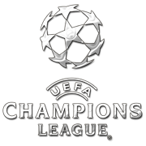
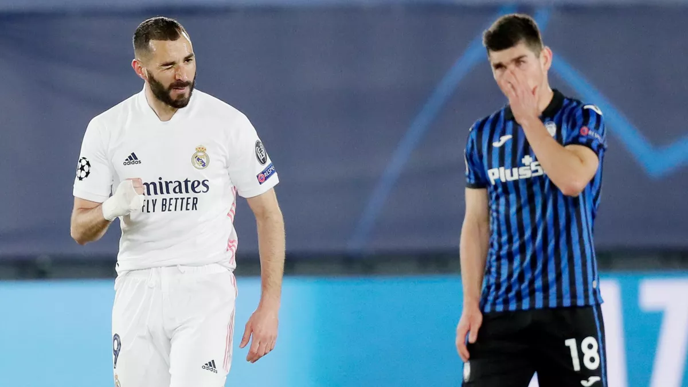
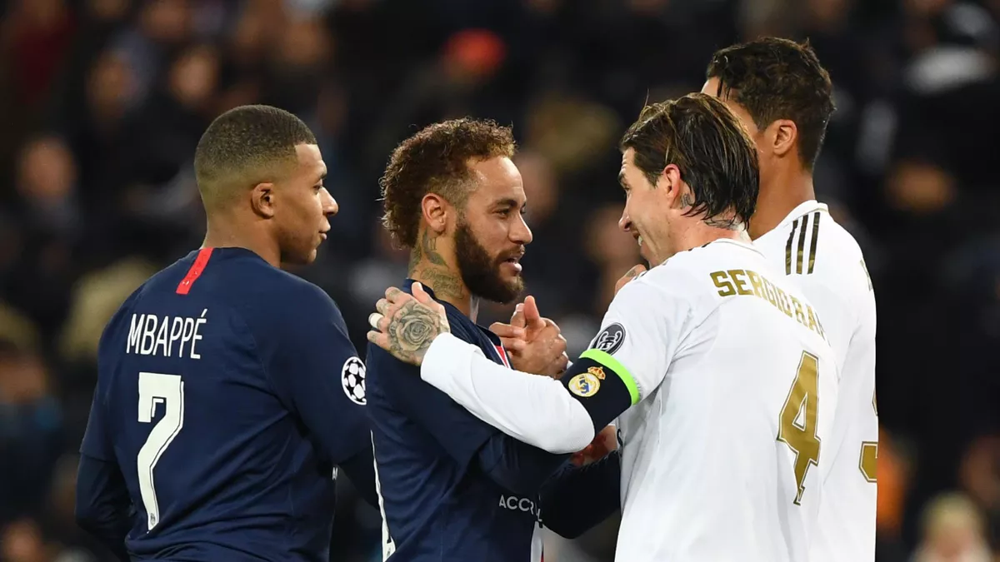
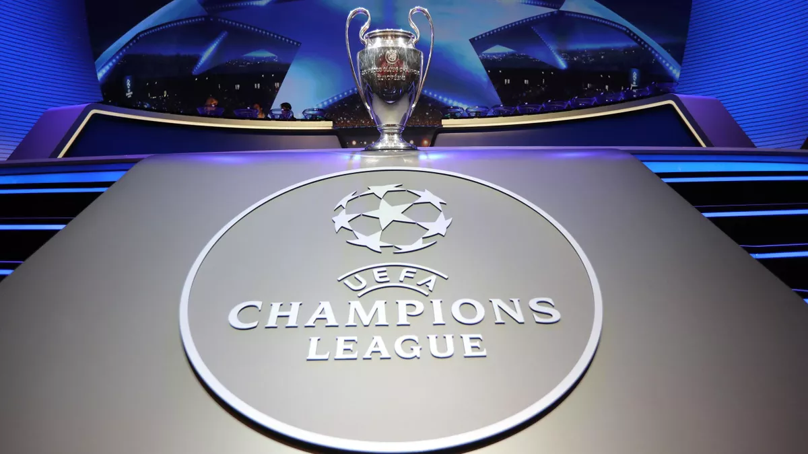
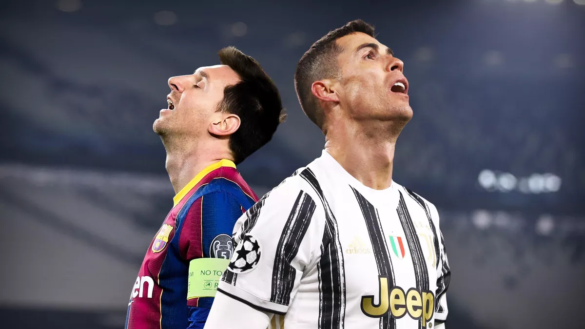
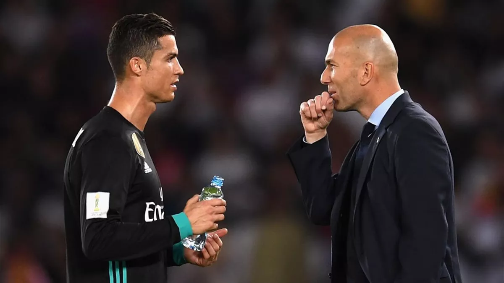
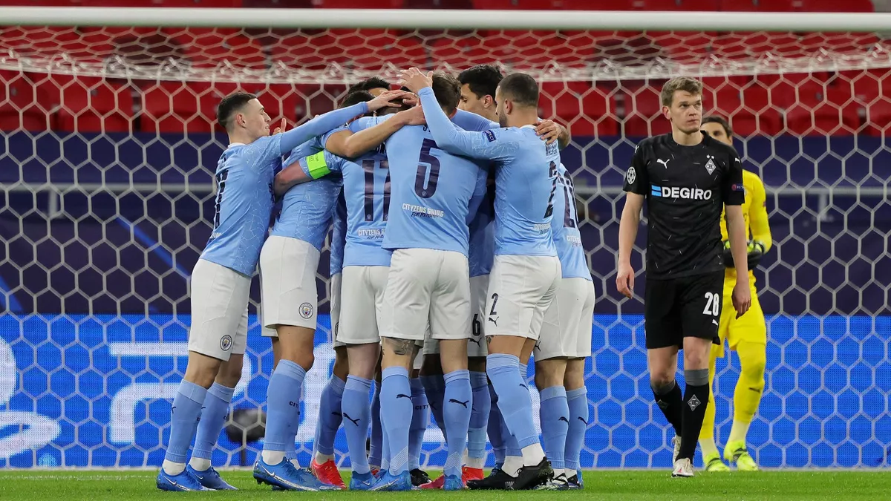
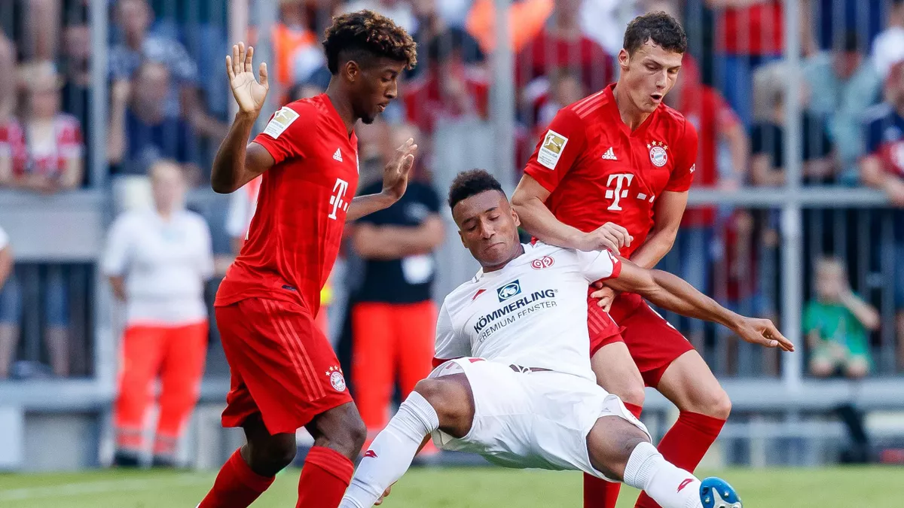
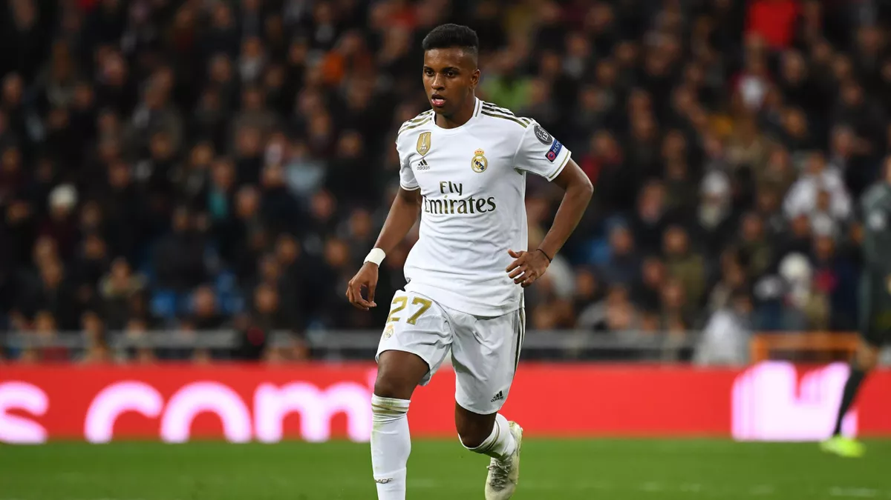
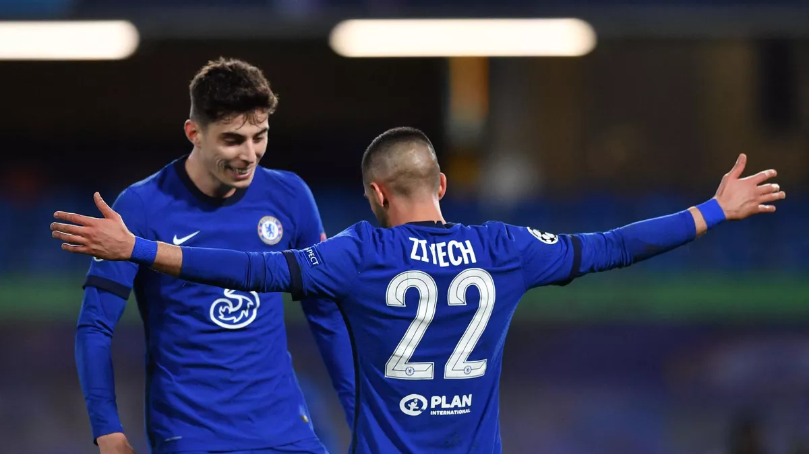

CALENDRIER/RESULTATS
PHASE DE QUALIFICATION
PHASE DE GROUPES
PHASE FINALE
CLASSEMENTS
BUTEURS
PASSEURS
REVIVEZ LES MEILLEURS BUTS DE LA 8e DE FINALE EN LIGUE DES CHAMPIONS
PARIS FACE A UN DEFIT HISTORIQUE: SORTIR UNE EQUIPE DE CE CALIBRE, LE PSG NE L'A JAMAIS FAIT...
RAMOS, M.SALAH: LE NOUVEAU DUEL S'ANNONCE...
REVIVEZ TOUS LES BUTS ET OCCASIONS DU CHELSEA-ATHLETICO EN 8e DE FINALE DE LA LC...
IL ES ECCEPTIONNEL: BENZEMA, PATTE DE VELOURS ET MVP DU REAL...
TUCHEL, REVANCHE D'AOUT, INCONNUE PORTO? LES TIRAGES POSSIBLE POUR LE PSG...
OU ET QUAND SUIVRE LES TIRAGES AU SORT DES QUARTS DE FINALE DE LA LIGUE DES CHAMPIONS ?
DES QUARTS SANS MESSI RONALDO: UNE PREMIERE DEPUIS 2005...
POURQUOI LE REAL N'A T-IL JAMAIS SU REMPLACER RONALDO...
SEPT CLEAN-SHEETS DE RANG POUR CITY ET UN GARDIOLA AUX ANGES: C'EST IMPRESSIONANT
COMAN, PAVARD KOUASSI, SARR...MAIS OU SONT LES FRANCAIS DU BAYERN ?
UN HACKER PREND POSSESSION DU SITE DU REAL MADRID ET ANNONCE UNE FAUSSE BLESSURE DE RODRYGO...
CHELSEA ÉLIMINE UN TRISTE ATLÉTICO MADRID ET SE QUALIFIE POUR LES QUARTS